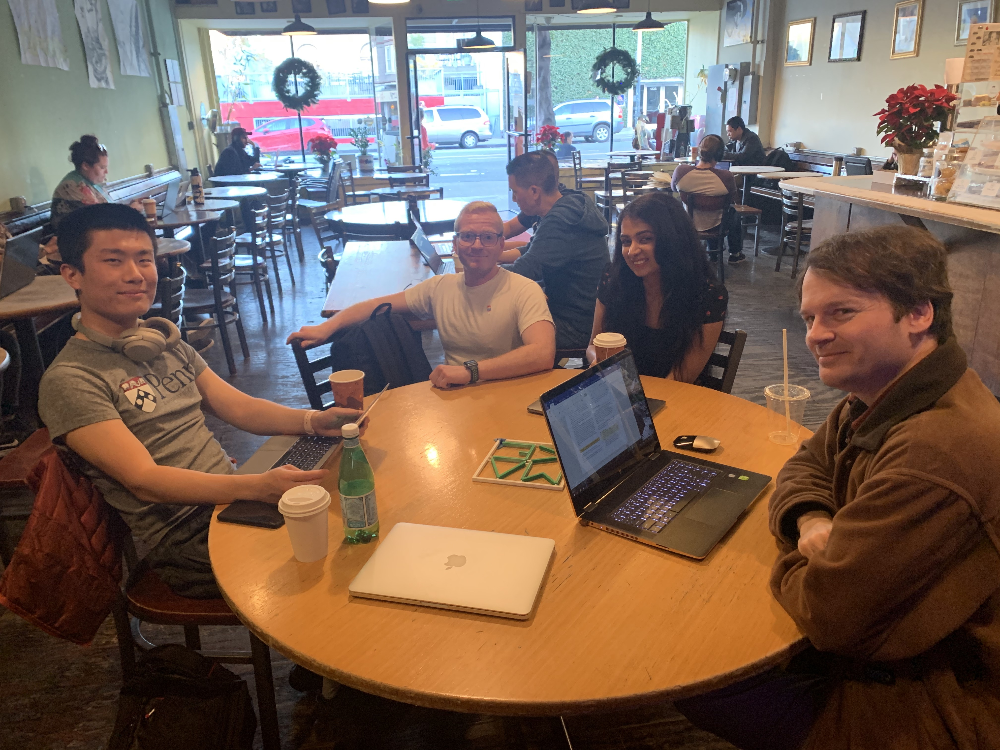

With tech being such a large field and an industry that is constantly changing it is important to stay current and connected. One of the best ways to do so is keeping up on the social side of tech by attending seminars, classes, and meetups.
Meetups provide an environment to make connections and get involved with companies and concepts that one may not have been exposed to prior, and with sites like Meetup.com and other social media platforms there are many great ways to find meetups and creative outlets. In a tech career it is not only important but also enjoyable to get out and meet other people in the field.
One group that I had discovered recently is called "Work On Your Designs With Friends". It's a fairly low-key group that mostly serves the purpose of bringing people together with different backgrounds in the tech world and provide a workspace for people during the weekend. They meet every other weekend and it is composed of two sub groups. One is designers and the other are people with creative interests pertaining to tech. Unfortunately they don't have a site just for the group yet and instead only have their Meetup page, but after attending one of the organizers asked me if i would be interested in helping to build their first page!
Everyone was really welcoming and insightful, and while people had their own projects to work on it was really helpful to speak with people that, even coming from different backgrounds and careers, were still knowledgeable in the world of tech. I will definitely be back and I cant wait to work with people there in the future. Who knows, it may even help me find a job.